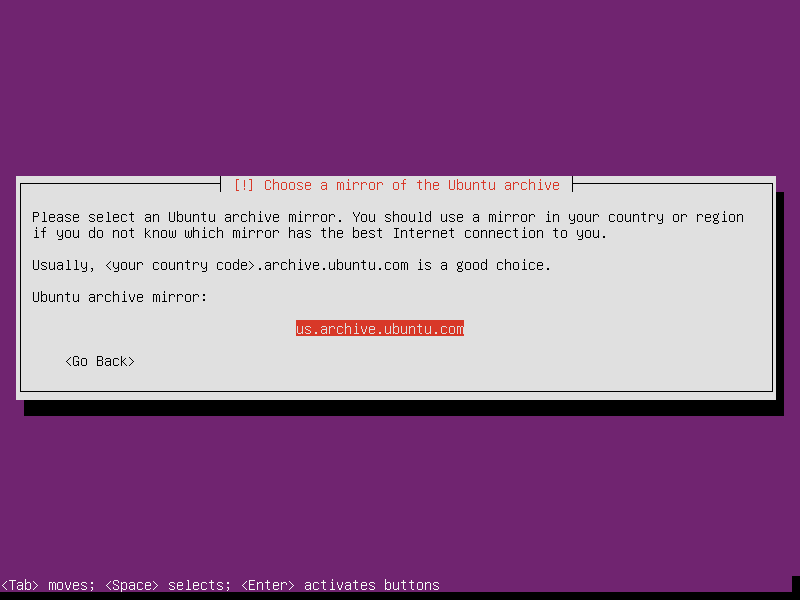
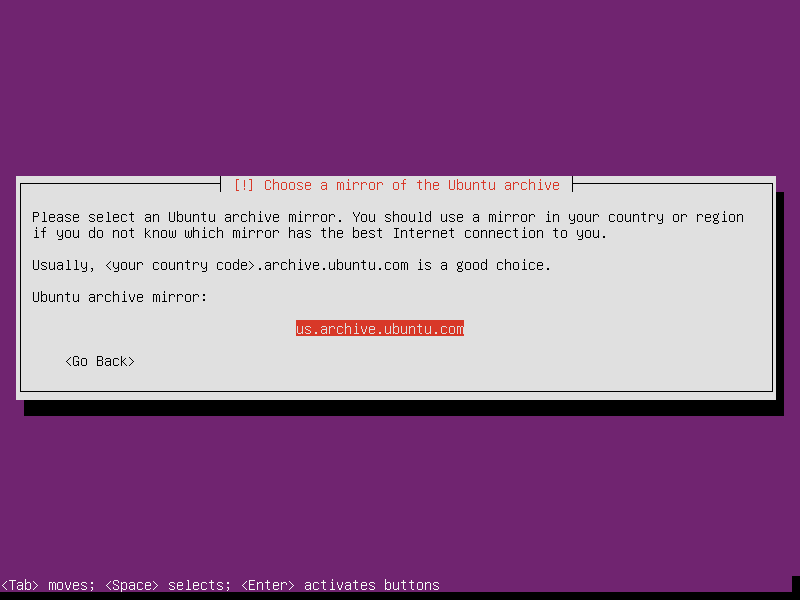

Ubuntu 14.04 "Trusty Tahr" is a long-term support release (till 2019) of the popular Linux operating system. I use Ubuntu's minimal install image to create a lightweight, console-only base configuration that can be customized for various tasks and alternate desktops.
Below is a visual walk-through of a sample Ubuntu setup that makes use of an entire storage device divided into 3 partitions: unencrypted root and LUKS encrypted home + swap.
Step 0 - Installer
Download a 64-bit (32-bit for older machines) Ubuntu mini.iso and burn the image to a CD or prepare a USB boot device.
Step 1 - Go!


 



Step 2 - Partitions
In the example below we create 3 partitions on the disk:
- sda1 is a 16GB root partition
- sda5 is a 1GB LUKS encrypted swap partition using a random key
- sda6 uses the remaining space as a LUKS encrypted home partition using a passphrase


Note
Setting Mount options to noatime decreases write operations and boosts drive speed.


Note
If the hard disk has not been securely wiped prior to installing Ubuntu (using a utility like DBAN) you may want to configure Erase data as yes. Note, however, that depending on the size of the disk this operation can last several hours.


Note
Reserved blocks can be used by privileged system processes to write to disk - useful if a full filesystem blocks users from writing - and reduce disk fragmentation. On large, non-root partitions extra space can be gained by reducing the 5% reserve set aside by Ubuntu to 1%.


Step 3 - Install packages and finish up

Note
Leave all tasks unmarked if you wish to start with a minimal, console-only base configuration ready for further customization. The task menu can be accessed post-install by running sudo tasksel.


Note
If an encrypted home partition was created in Step 2 the system will display a passphrase prompt to unlock the partition.


Enjoy your fresh Ubuntu!